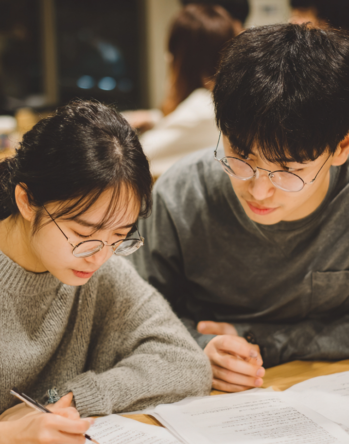
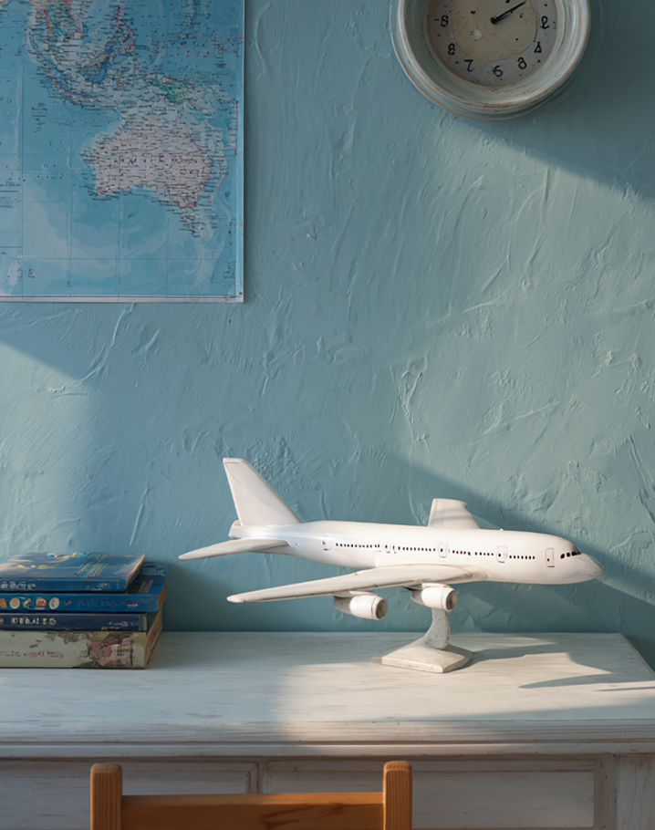
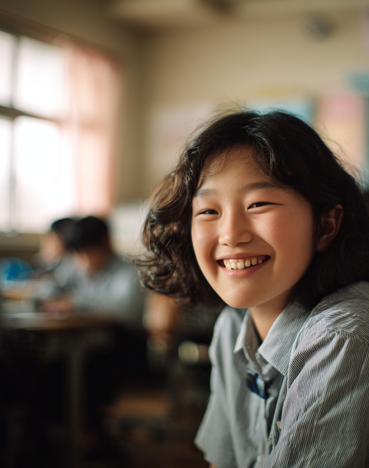
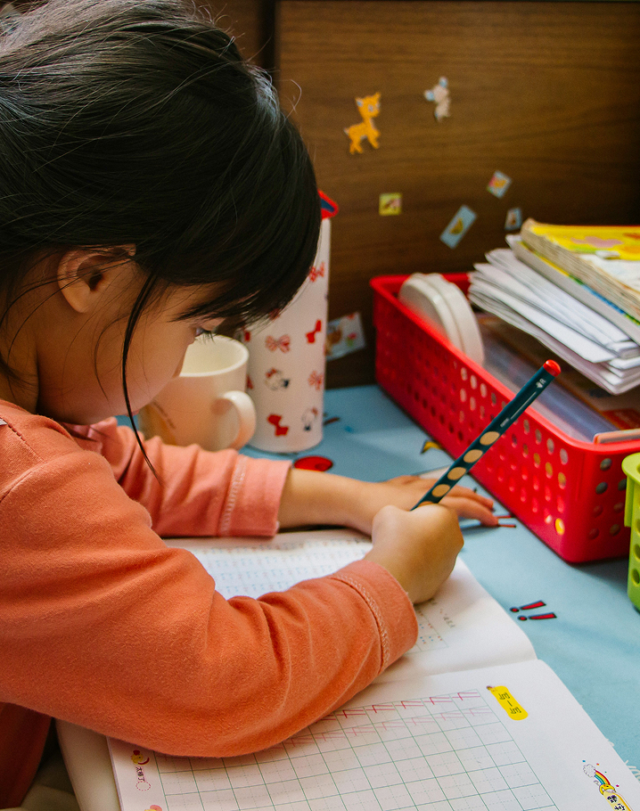
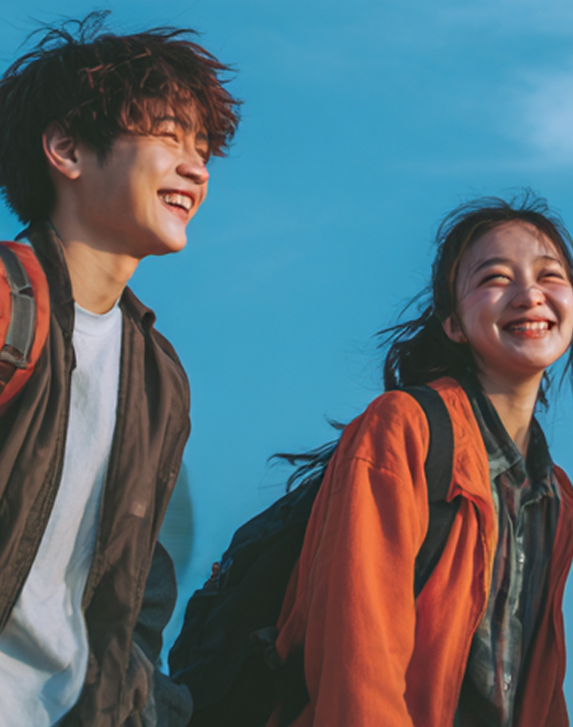
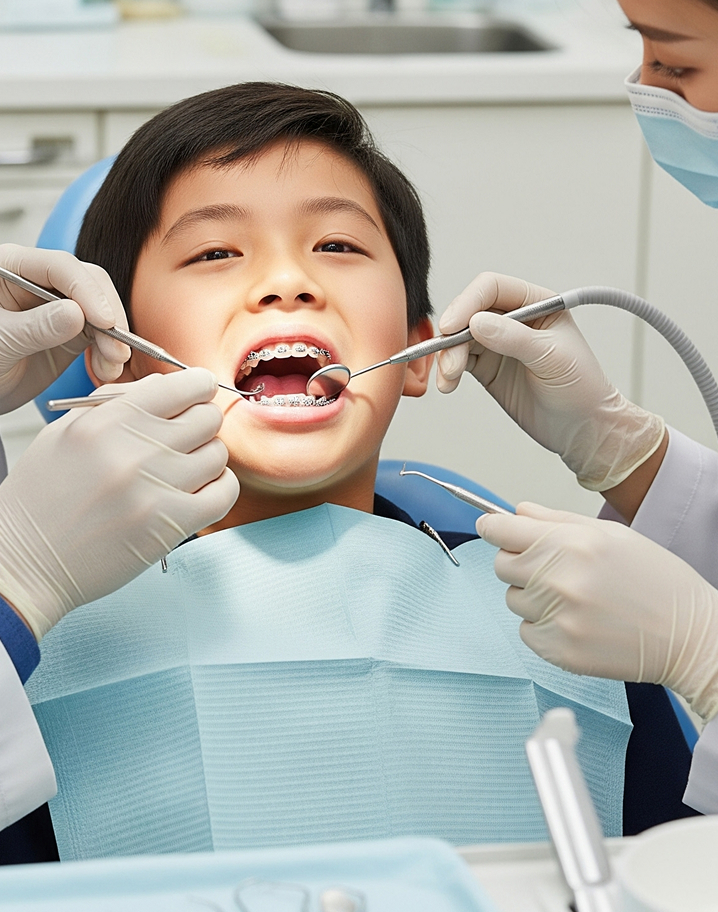

팝업
S-DREAM PROJECT
삼성꿈장학재단은
삼성꿈장학재단은
교육을 통해 사회와
미래를 밝힙니다.
-

멘토링
꿈장학사업꿈과 가능성이 있는 청소년을 선발해, 멘토를 배치하여 교육적·정서적 지지를 통해 꿈을 찾을 수 있도록 지원
-

글로벌
꿈장학사업한인 후손과 개발도상국 청소년을 교육으로 지원해, 자국 발전을 이끌 글로벌 리더로 성장하도록 돕는 사업
-

배움터
교육 지원교육 불균형 지역 아동·청소년을 위해 배움터가 협력해 교육과 복지 안전망을 마련하는 사업
-

방과후 학교
대상 시상교육부와 재단이 함께 우수한 방과후학교 프로그램을 운영한 학교·교사·단체를 매년 시상
-

리더 육성
꿈장학사업우수한 꿈장학생을 선발해 리더로 성장할 수 있도록 장학금과 맞춤 교육을 지원하는 사업
-

청소년치아
교정 지원 사업가정형편상 치료가 어려운 장학생에게 치과 학회와 봉사회가 무료 교정 기회를 제공하는 사업